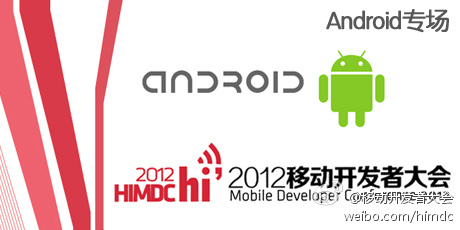

作为对技术社区活动的支持，上海站活动已放入CSDN首页“社区活动”板块  网页链接 作为鼓励第一个尝试社区合作的，CSDN BBS首页 “社区公告”也有链接推广 网页链接 。预祝活动成功举办。//@catfly廖湘宁: 上海站【Android专场】@安卓市场HiMarket @Italk新经济沙龙
网页链接 作为鼓励第一个尝试社区合作的，CSDN BBS首页 “社区公告”也有链接推广 网页链接 。预祝活动成功举办。//@catfly廖湘宁: 上海站【Android专场】@安卓市场HiMarket @Italk新经济沙龙
@你好啊1_45262:
#2012移动开发者大会#上海站【Android专场】将于9月01日下午在上海创智天地会议中心隆重召开。这将是我们联合eoe，安卓巴士继北京站成功召开Android专场会议后再度开启上海站Android专场，宗富广，李亮，邓军，沈彤将带来精彩演讲。社区赠送票，传送门：网页链接
- 